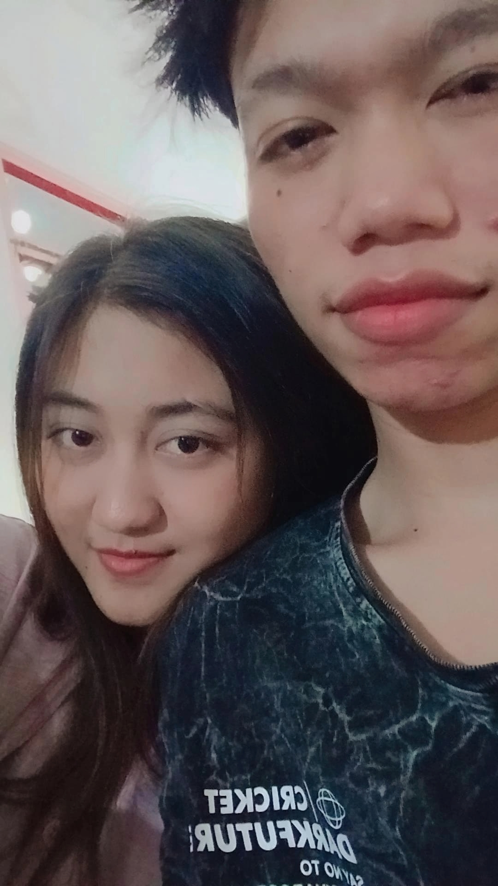
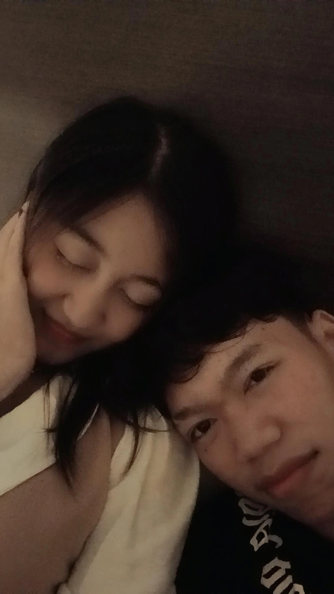
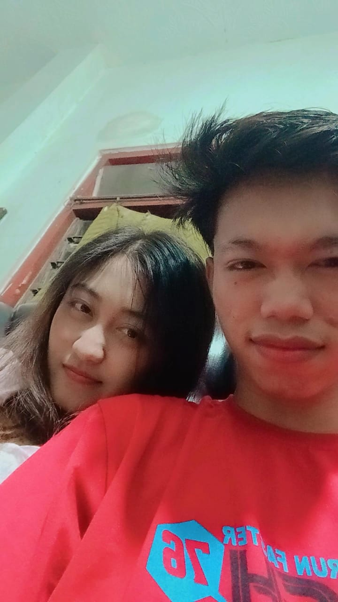
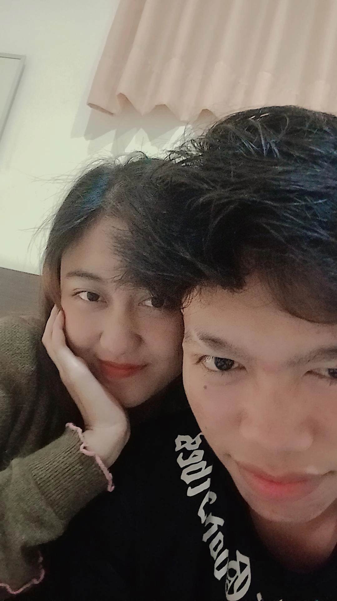
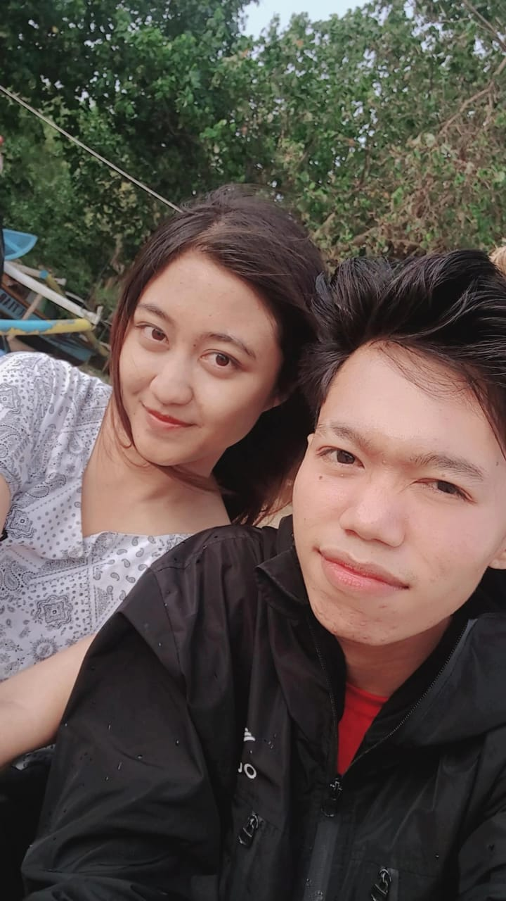
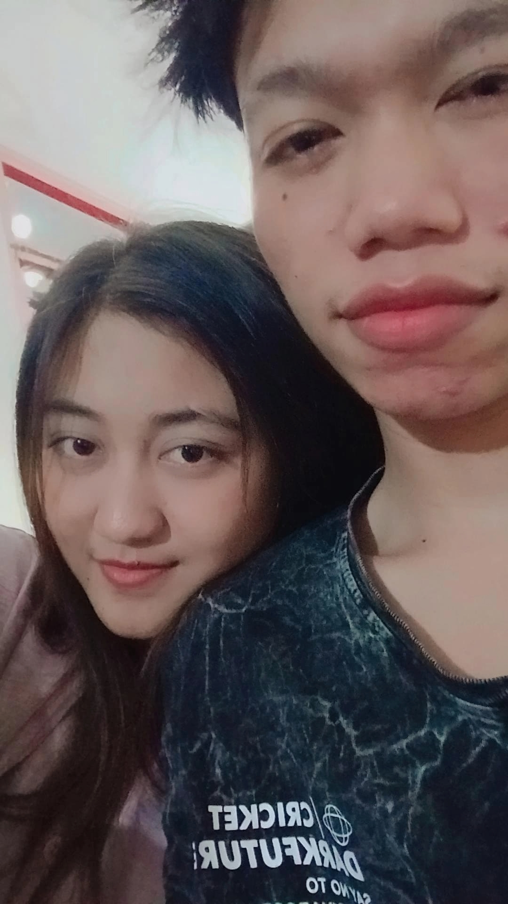
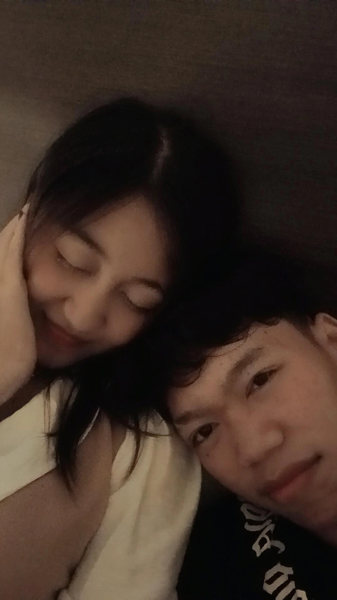
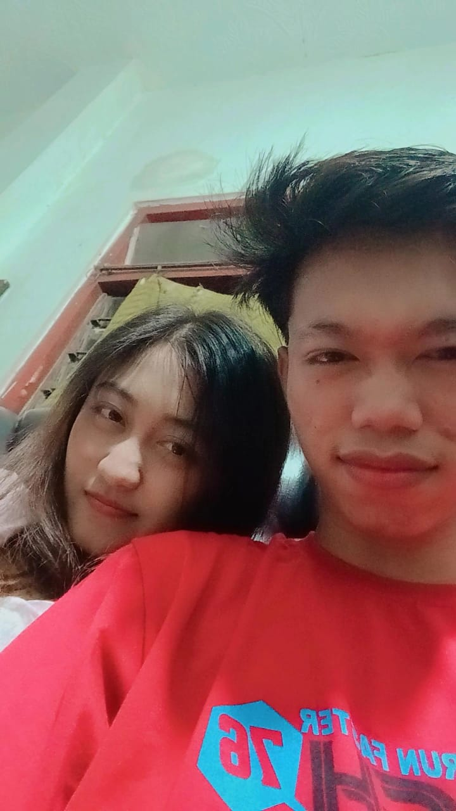
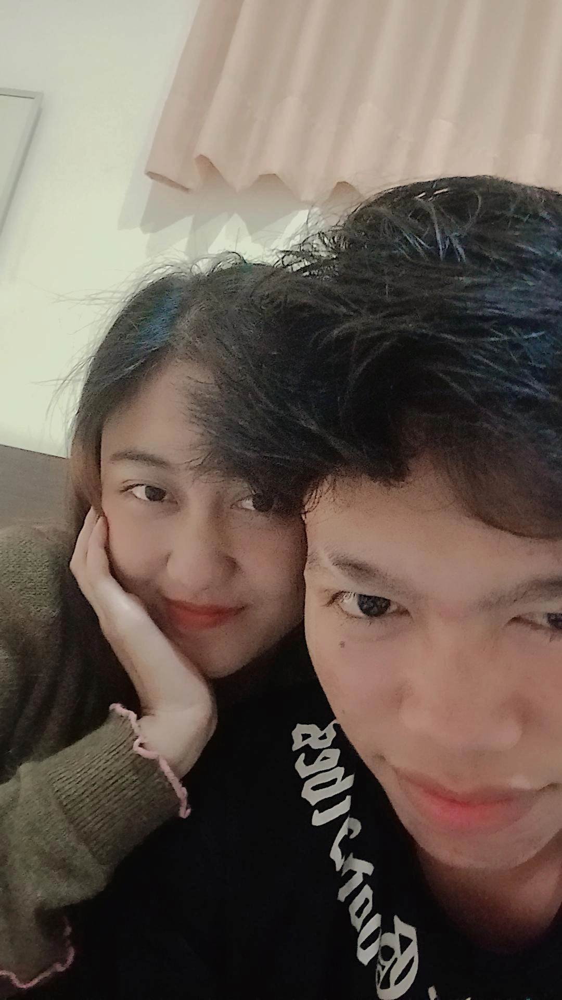
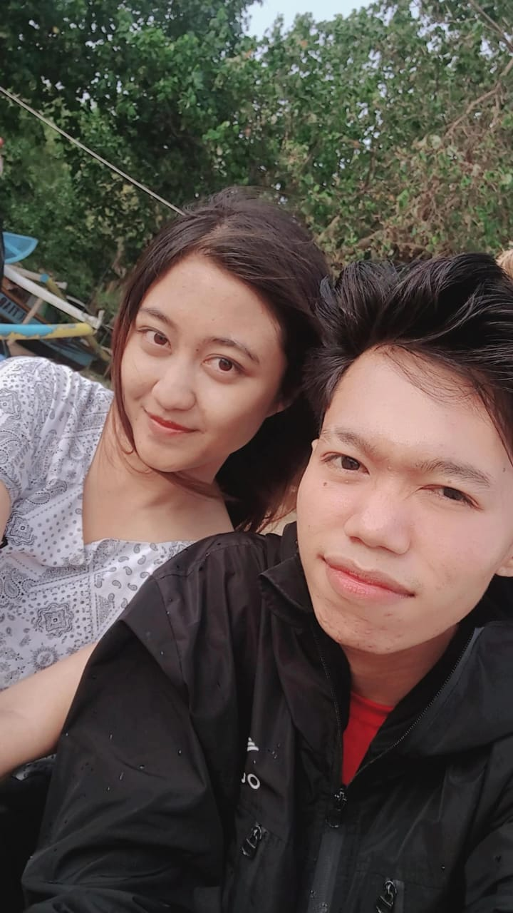

🎵 Now Playing: Jaz – Berdua Bersama
Hari ini, hari yang spesial untuk kita. Terima kasih sudah bertahan sejauh ini. Terima kasih sudah jadi seseorang yang terus aku percaya, bahkan ketika kadang kamu bingung dengan diri sendiri. Aku tau kita beda cara mencintai, tapi aku tetap bersyukur Allah pilih kamu buat aku💌
Terima kasih untuk semua sabar yang kamu kasih, untuk setiap kali kamu tetap tinggal meski aku banyak maunya, untuk semua waktu, kata manis, tawa receh, pelukan hangat walau kadang cuma lewat chat, dan bahkan diam yang pernah kita lewati.
Aku tau, hubungan kita ngga selalu mulus. Ada banyak perbedaan di antara kita, aku yang sering butuh kata, kamu yang lebih banyak diam. Tapi justru dari situ aku belajar mencintaimu lebih dalam, belajar sabar, dan belajar melihat cinta bukan cuma dari apa yang terlihat, tapi dari rasa yang kita pelihara🥰
Aku masih ingat janji-janji kecilmu yang ngena banget di hati aku. Kamu pernah bilang ngga akan capek, demi aku kamu mau terus belajar jadi romantis, dan kamu atur waktu yang kamu punya biar selalu ada buat aku. Itu semua aku simpan baik-baik di hati aku, karena aku percaya kamu.
Aku cuma mau kita bisa saling ngerti lebih baik lagi. Kadang aku bisa tantrum, overthinking, kadang kamu bisa bingung dan hilang arah. Tapi semoga tetap bisa sama sama pulang ke satu sama lain. Aku ngga minta jadi sempurna, aku cuma mau kamu kamu tetap berusaha, seperti aku juga tetap di sini.
Aku bikin surat ini buat ngingetin kamu dan aku, bahwa kita pernah berjanji saling ada, saling menguatkan, dan saling belajar untuk tumbuh bareng. Dan hari ini, aku mau bilang lagi aku selalu pilih kamu.
Selamat anniversary yaa, Sayangkuu💐
Semoga ini selalu jadi awal baru buat kita berdua dan semoga kita bisa terus tumbuh meski jalannya pelan, asal tetap bareng.